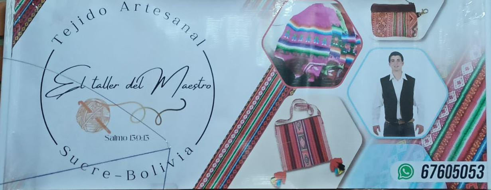
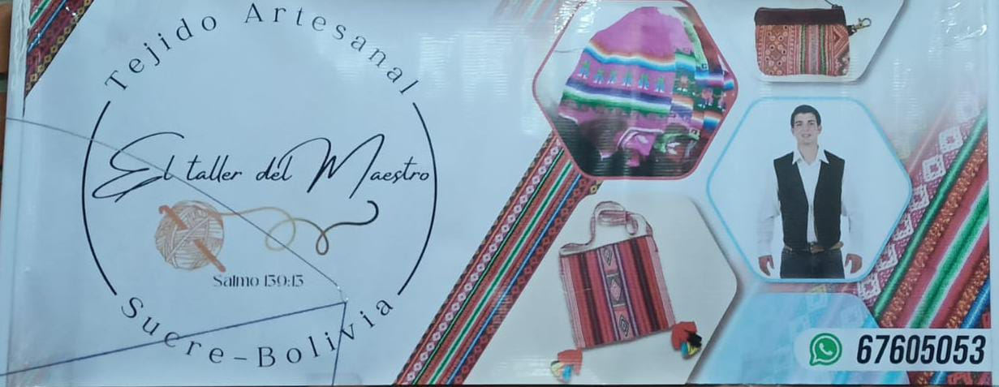

TEJIDO ARTESANAL
 


Tejido artesanal EL TALLER DEL MAESTRO ofrece una variedad de productos a sus clientes.
ofrece productos personalizados al gusto del cliente el tamño que quiera del color que desea.
tiene chulos, carteras, riñoneras y entre otros productos mas
CATALOGO